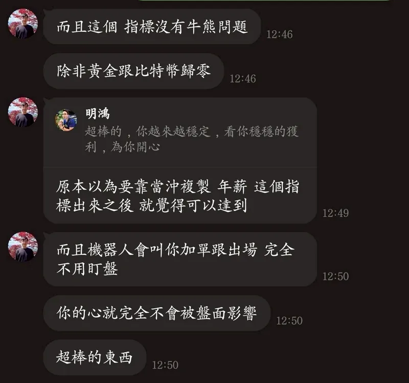
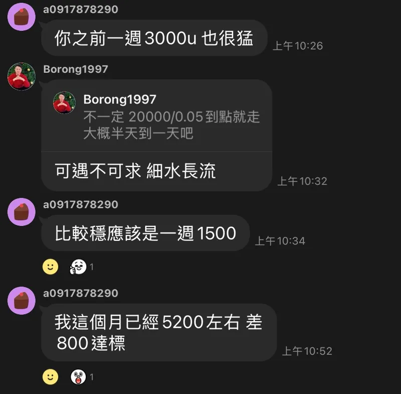
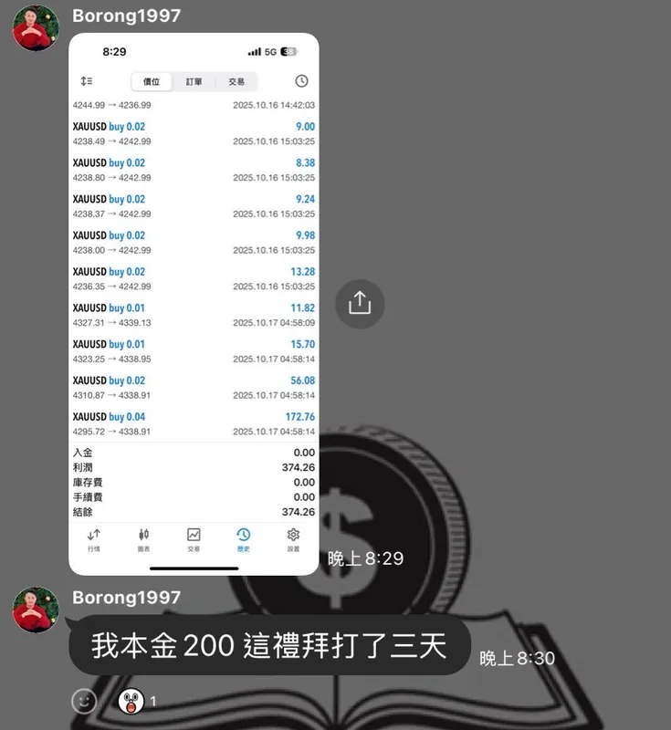
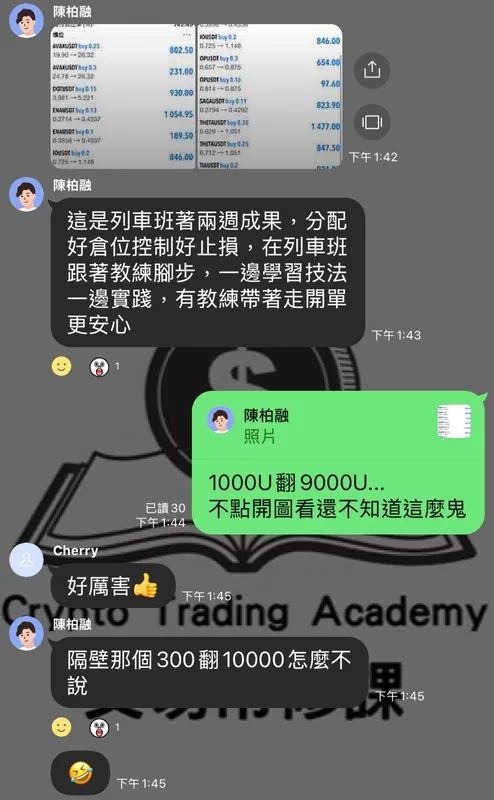
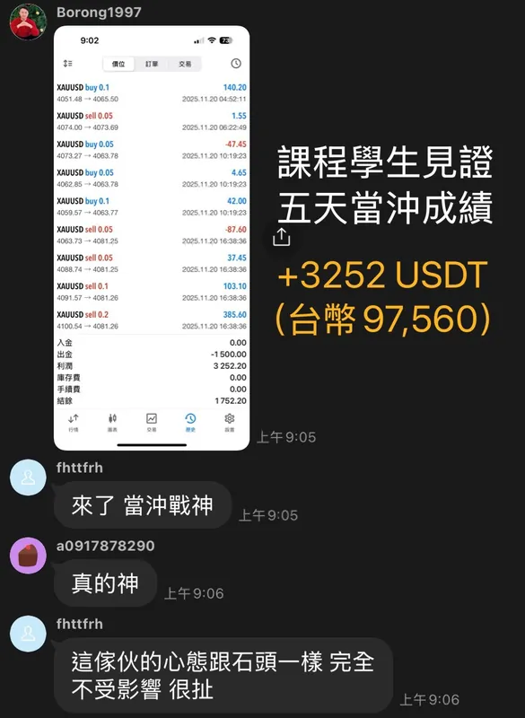
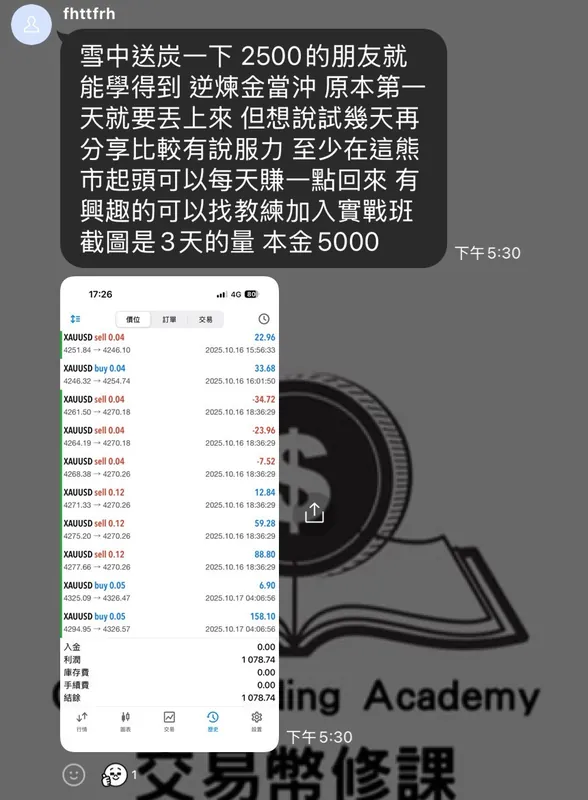

你缺的不是更多指標，也不是更準的明牌。
你缺的是一套「自己就能判斷」的交易決策規則——什麼時候進場、什麼時候出場、賠多少就該停。
點擊後將前往 LINE@，由真人教練協助安排
免費交易規則健檢＝交易規則教育診斷，不提供標的、價格、倉位或買賣建議 ｜ 無壓力交流，不強迫推銷
上漲敢追、下跌不敢砍。一個多頭賺的，往往不夠賠一個你不肯認的空頭。
贏不知道為什麼贏、輸說不出哪步錯——沒規則就沒「下次改進」，只有運氣輪流請客。
跟群組喊單、跟網紅進場，賺是他厲害、賠沒人負責。你永遠在等下一個訊號，卻沒建立自己的一套判斷。
很多散戶不是不努力，是缺一套可重複檢查的規則。市場不會因為你「很努力盯盤」就放過你，它只回應有自己規則、守紀律的人。
回歸裸K本質，同一套判斷主線，三種市況都用得上你自己的規則
趨勢明確時——順著走、分批佈局、吃中段
逆勢操作、在關鍵防守位出手、快進快出
同向短線、日內完結、靠紀律累積
工具是來放大你的判斷、幫你執行你自己的規則，不是取代你的判斷
以下工具皆為課程學員專屬資源，不單獨販售訂閱；工具不提供買賣建議、不代表標的推薦
多套課程輔助指標，用來標記趨勢變化與觀察區，幫助你練習檢查自己的交易規則；不作為買賣訊號
教學案例觀察提醒，搭配 AI 觀察清單篩選器（學員限定），協助你縮小練習範圍並檢查自己的規則；不提供進出場指令
教練以教育角度拆解市場案例，帶學員練習如何檢查規則、風險與紀律
沒有公版進度，只有你的專屬課表——依你的程度與目標，由教練為你定製
沒有公版進度，只有你的專屬課表
至於你該從哪裡開始？我們在免費交易規則健檢為你定製。
每個人的基礎與目標不同，路徑在健檢時依你的狀況量身建議
他們學會的不是賺多少，是「怎麼做決定」——更敢停損、不再追高、會寫自己的交易計畫
一開始一定要先用模擬帳戶打過一段時間，熟悉交易操作，避免不小心按錯。因為先模擬過，操作上比較不會錯誤。
— 黃金交易學員・模擬一個月後轉真倉的心得
剛開始勝率一好就容易上頭，也貪心過、沒按照教學就自己延後出場。後來跟教練修正錯誤、調整心態——小損也沒關係，不然會滿累的。
— 同一位學員・初期問題與中期修正
控制好自己的風險跟每天的目標很重要；下單前自己再感受一下目前趨勢，會比較穩。當然還是有風險，這個自己要非常清楚。
— 同一位學員・滿月後的總結






以上為學員個人學習心得分享，描述的是學習與紀律上的改變，不涉及收益宣稱，過往表現不代表未來
如果你想要的是一套自己看得懂、自己下得了決定的規則，而且願意花時間把它練成反射——那我們很可能聊得來。
費用會依一對一教練時間、學習路徑與需要的陪伴程度而不同。健檢會先確認你的基礎、目標與可投入時間，再說明是否適合與對應方案。若目前不適合，我們也會直接告訴你，不會硬推課程。
非常適合，沒有壞習慣的「白紙」往往學得最快。我們採一對一教練制，會從最基礎的 K 棒觀念、風控紀律帶起，依你的程度安排學習順序，確保每一步都踩得扎實。先預約免費交易規則健檢，讓教練評估你適合從哪裡開始。
我們教的判斷法本來就不需要整天盯盤——先訂出關鍵價位，再等收盤確認，一天只需要幾個固定的檢查時點。學員另有 AI 觀察清單篩選器（學員限定）協助縮小觀察範圍，但最終判斷永遠由你自己的規則決定。健檢時我們會依你的作息，幫你安排學習與看盤節奏。
報單群的目的常是讓你頻繁交易賺手續費，你永遠不知道為什麼進場。我們是教育機構——工具只是幫你節省整理資訊的時間，最後一定要用你自己建立的規則拍板。我們的目標是讓你未來即使沒有我們，也能在市場上獨立生存。而且我們的教學案例紀錄不刪單、不補單、不回填，虧損案例一樣公開。
不會。我們教你建立自己的規則，目標是讓你不再需要任何人的訊號。如果你想找人替你決定買什麼、什麼時候買，我們不是適合你的地方。
我們自研了多套 TradingView 專屬 VIP 指標，依 8 年實戰經驗與三大交易系統打造，並搭配歷史資料復盤與案例練習持續迭代。它們會標記趨勢變化與觀察區，但定位是「練習輔助」、不作為買賣訊號——最重要的還是教練幫你建立自己的判斷邏輯。與其聽我們說，不如預約免費交易規則健檢，我們用歷史走勢與案例實際帶你復盤一次。
有的！YouTube 每週二 20:00「策略之夜」直播、Zoom 每週三 20:00「逆煉金歐美盤演練」，加 LINE@ 還能領免費錄影課程。先觀察我們的教學方式與市場觀點，再決定要不要預約免費交易規則健檢。
免費交易規則健檢
這不是制式的課程推銷，而是一場一對一的交易規則教育診斷。
我們依照你的經驗、目前的問題與可投入時間，幫你判斷下一步該補什麼。
預約後，你可以實際體驗：
點擊後將前往 LINE@，由真人教練協助安排
免費交易規則健檢＝交易規則教育診斷，不提供標的、價格、倉位或買賣建議
不需先付款 ｜ 無壓力交流，不強迫推銷 ｜ 即使沒加入，也會更清楚自己缺哪塊規則